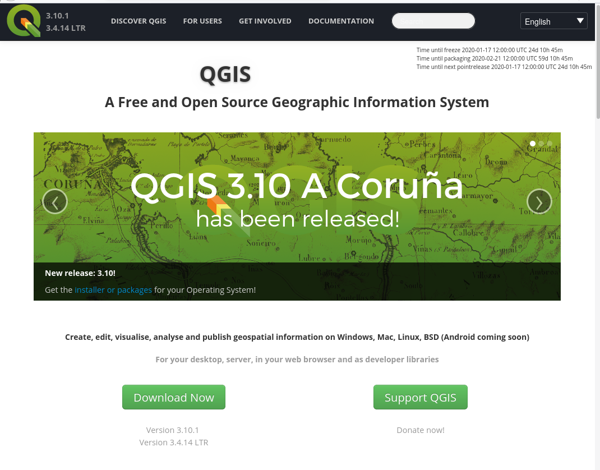

Geographic Information Systems for Public Policy - Lecture I
Introduction
Sergio Rey
Today
- This course
- GIS
Outline
- GIS Software
- Open Source and Open Science
- QGIS
- Interface
- Working With Files and Directories
QGIS
|  |
QGIS
figure with bullets
|
Features:
|
An unnumbered list
- first thing
- second thing
- item
Figure bullet fragments right
|
features:
|

GIS for Public Policy’19 by Sergio Rey is licensed under a Creative Commons Attribution-ShareAlike 4.0 International License.